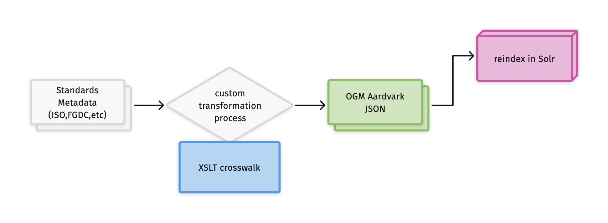
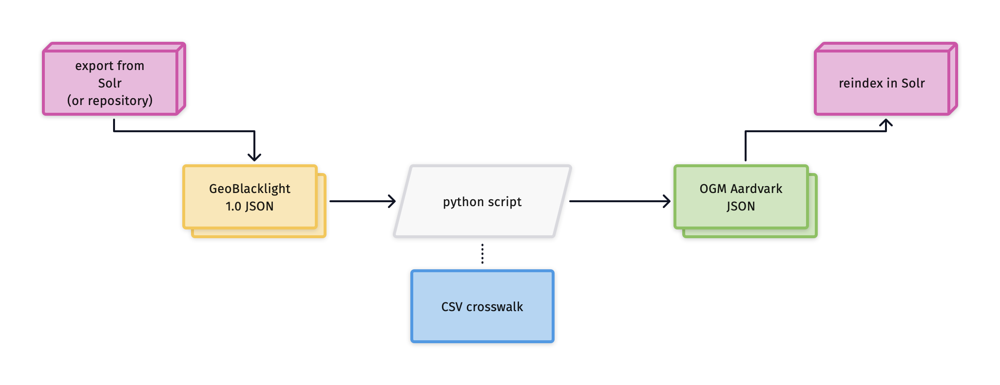
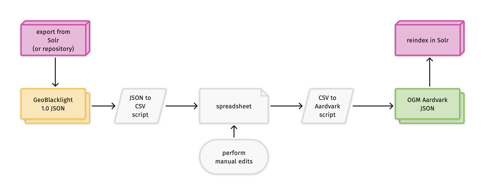

Upgrade Guide for converting Metadata from GBL 1.0 to OGM Aardvark¶
The following options are three ways to upgrade GBL 1.0 metadata into OGM Aardvark. The figures include references to Solr, the search index that powers a GeoBlacklight instance.
Option 1: New pipeline¶
Re-run the metadata pipeline with a new crosswalk
 Fig.1 - Metadata pipeline showing a conversion from standards metadata
Scenario¶
- you have geospatial resources with structured metadata files in an official standard, such as ISO 19139, FGDC, MODS, or MARC
- your organization already has a metadata pipeline process that converts these structured files to GBL 1.0
How does it work?¶
This option involves updating your local transformation workflow that extracts values from standards-based metadata files.
-
For institutions that utilize an XSLT for the transformation, GeoCombine repository has XSL files.
-
For institutions that use custom tools or Python scripts, refer to the OGM Aardvark - FGDC- ISO 19139 crosswalk document to update the code. It shows crosswalks between OGM Aardvark, GBL 1.0, FGDC, and ISO.
Considerations for Option #1¶
- may require extra institutional support, particularly if the transformation process is part of a larger framework or connected to a repository.
- community-developed XSLs are still a work in progress
Option 2: Convert JSONs¶
Programmatically convert the JSON files
 Fig.2 - Programmatic transformation process using Geoblacklight 1.0 Metadata JSONs
Scenario¶
- you only have GBL 1.0 metadata (no structured metadata files in an official standard)
- you want to test your environment with the new Aardvark schema
How does it work?¶
- Gather GBL 1.0 metadata JSON files on your desktop
- Use a script or tool to convert the files batch convert GBL 1.0 JSON files to OGM Aardvark
- Re-index the resulting Aardvark JSON files into your application (GeoBlacklight)
Currently, the OpenGeoMetadata community has two tools that can do batch conversions:
-
gbl2aardvark: A web-hosted interface (recommended tool).
- Users can upload GBL 1.0 metadata files to this tool and it will return a downloadable JSON in the OGM Aardvark schema.
- In addition to direct crosswalks, this tool will also populate the
Resource ClassandResource Typebased upon theTypeandGeometry Typefields from version 1.0. It will also generate new collection level records based upon the value in the Is Part Of fields. - Any fields that do not properly convert will be flagged with the phrase "EDIT ME --"
- When reindexing Solr with a single JSON file representing multiple records, use Solr's "Document Type"="File Upload" option.
- See the GitHub documentation for more information
-
a standalone Python script: https://github.com/OpenGeoMetadata/gbl-1_to_aardvark.
- This command line script will perform a straight conversion of field names.
- It features an editable crosswalk file to customize the transformation.
- The non-crosswalkable elements listed above (Type, Geometry Type, and Is Part Of) do not have direct crosswalks and will be copied as is into the new Aardvark JSONs.
Manually remediate tranformated JSONs¶
 Fig.3 - Transformation process that includes manual remediation
You may need to perform additional cleanup on the tranformed JSONs. This technique combines automatic conversions and manual edits:
-
Convert your metadata files to a CSV. This Python script will convert a batch of JSONs to a CSV file
-
Manually augment and adjust column names and values using spreadsheet functions.
-
Convert your spreadsheet to OGM Aardvark JSONs. This Python script will convert CSVs to Aardvark JSONS
Considerations for Option #2¶
-
a workaround method if changing the metadata pipeline is not feasible. However, is not a long-term solution and may result in incomplete metadata.
-
will not include some fields that are new in OGM Aardvark, such as Rights or License. To take advantage of those fields, use Option 1 or perform additional remediation.
-
manual cleanup after transformation may be labor intensive